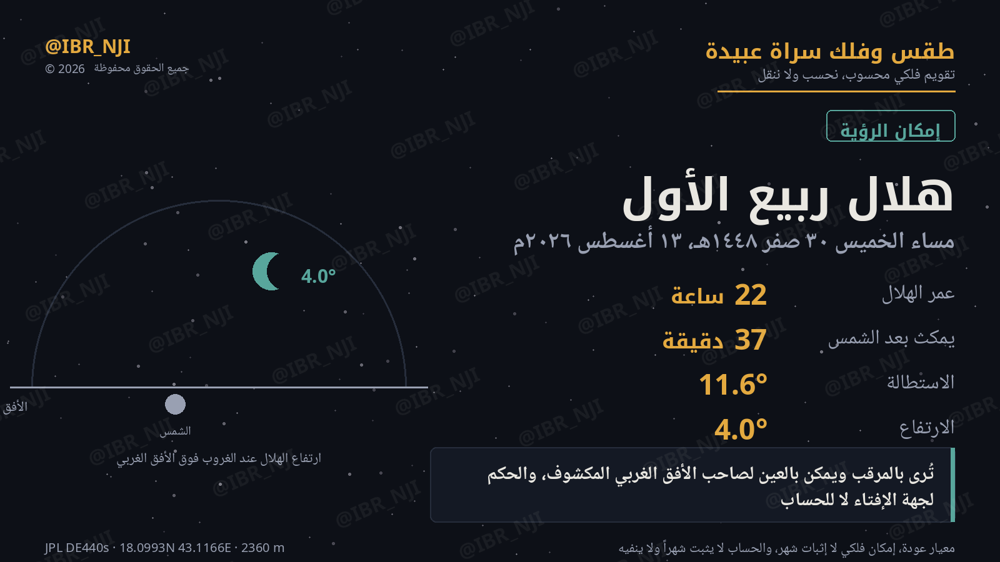

الحساب يقول ما يمكن أن يُرى، لا ما رُئي فعلاً. لا يُثبت شهراً هجرياً ولا ينفيه — والإثبات لجهة الإفتاء وحدها.
الحساب: يمكن رؤيته مساء السبت 12 سبتمبر 2026م

الليلة الأولى لا تكفي بهذا الحساب، فالثانية هي البديل الذي يُبنى عليه القرار — لا رفيقة تأكيد. والتاريخان محسوبان حول بداية أم القرى المتوقعة، وقد يسبقها الترائي الفعلي أو يتأخر عنها بيوم.
يتعذّر رؤيته — الاستطالة 6.2° دون حدّ دانجون (~7°) — لا هلال أصلاً
لا تُرى بحال
| غروب الشمس | 15:13 (+3) |
| غروب القمر بعدها بـ | 10 دقيقة |
| عمر الهلال | 11.8 ساعة |
| الاستطالة (قوس النور) | 6.24° |
| الارتفاع عند أفضل رؤية | 0.73° |
| الإضاءة | 0.3٪ |
يمكن رؤيته
تُرى بالعين المجردة
| غروب الشمس | 15:13 (+3) |
| غروب القمر بعدها بـ | 47 دقيقة |
| عمر الهلال | 35.8 ساعة |
| الاستطالة (قوس النور) | 18.56° |
| الارتفاع عند أفضل رؤية | 5.27° |
| الإضاءة | 2.6٪ |
الحساب: يمكن رؤيته مساء الأحد 7 فبراير 2027م
بعيدٌ زمنياً، لكن الحساب لا يتغيّر بالبعد — هذا إمكان الرصد لا إثبات الشهر، وحسمه لجهة الإفتاء حين يحين وقته.
يمكن رؤيته
تُرى بالمرقب، ويمكن بالعين
| غروب الشمس | 15:05 (+3) |
| غروب القمر بعدها بـ | 44 دقيقة |
| عمر الهلال | 23.1 ساعة |
| الاستطالة (قوس النور) | 9.94° |
| الارتفاع عند أفضل رؤية | 4.74° |
| الإضاءة | 0.75٪ |
| الرمز | الوصف |
|---|---|
| A | تُرى بالعين المجردة |
| B | تُرى بالمرقب، ويمكن بالعين |
| C | لا تُرى إلا بالمرقب |
| D | لا تُرى بحال |
والمنشور دائماً: أول ليلة تبلغ B فأعلى — فهي أول ما يمكن للمتخصص. ولا تُذكر ليلة A بوصفها موعداً ثانياً، فذاك ما يراه كل أحد.
القمر يغرب قبل الشمس — استحالة هندسية. أو الاستطالة دون حدّ دانجون (نحو ٧°). وهما هندسة لا تقدير، فلا تحتملان خلافاً.
تُعرض ليلتا الترائي معاً ولا يُحكم بواحدة — والتاريخ الميلادي هو المعوَّل عليه.